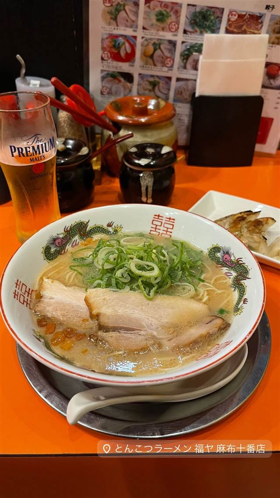

元祖とんこつ久留米らーめん 福ヤ 麻布十番店
久留米の老舗から分けてもらったスープを継ぎ足す豚骨ラーメン
とんこつラーメン 福ヤ 麻布十番店
WHY GO
久留米の老舗大栄ラーメンの種を一度も空にせず注ぎ足す呼び戻し製法で守る
久留米出身の代表が故郷の味を広めるために東京・麻布十番に開いたとんこつラーメン店。スープは久留米の老舗「大栄ラーメン」から分けてもらった種を、鍋を空にせず注ぎ足す「呼び戻し」製法で守り続けている。
TRIVIA
豆知識
- スープの元は久留米の老舗「大栄ラーメン」から分けてもらったもの
- 鍋を一度も空にせず注ぎ足し続ける「呼び戻し」製法は今や続ける店が少ない高度な技術
- 運営会社代表は久留米市の「くるめふるさと大使」に任命されている
REVIEWS
世間の評判
88.6ラーメンDB3.47食べログ
とんこつ担々麺と久留米風の実力
- 麺の硬さを選べる極細麺を使ったとんこつ担々麺を評価する声がある
- 久留米らしいざらつきのあるスープで味はまあまあという声もある
- ラーメンよりもむしろ餃子の方がおいしいと感じたという声もある
ラーメンデータベース 口コミ30件・最新 2026-04
| 創業 | 運営会社アルカサバは1990年設立。麻布十番店の開業年は未確認（記事執筆時点で「約5年前」の開業と紹介） |
|---|---|
| 系譜 | 開業にあたり久留米の老舗「大栄ラーメン」からスープを分けてもらい、以来継ぎ足して育てている |
| 看板 | とんこつラーメン |
| こだわり | 「呼び戻し」製法でスープの入った鍋を一度も空にせず注ぎ足しながら豚骨を2日間炊き続け、旨味を凝縮する |
| どこから | 都心 |
| 営業時間 | 月〜土 11:30-16:00 日 休み |
| 予算 | 昼 ～¥999 夜 ～¥999 |
| 場所 | 麻布十番 東京都港区麻布十番 |
| メモ | 麻布十番駅から徒歩1分。のれん分け・フランチャイズ展開もあり |
食べたもの：とんこつラーメン
NEARBY
近い店・同じ系統の店
-
 ★
豚骨 東高円寺駅
豚骨 蒼翔
クラウドファンディングで開業、鶏を使わない家系風豚骨
昼 ¥1,000～¥1,999 夜 ¥1,000～¥1,999
★
豚骨 東高円寺駅
豚骨 蒼翔
クラウドファンディングで開業、鶏を使わない家系風豚骨
昼 ¥1,000～¥1,999 夜 ¥1,000～¥1,999
-
 ★
豚骨 三ツ境駅
ラーメンショップ 二ツ橋店
二郎顔負けの分厚いチャーシューをのせるネギラーメン
昼 ～¥999 夜 ¥1,000～¥1,999
★
豚骨 三ツ境駅
ラーメンショップ 二ツ橋店
二郎顔負けの分厚いチャーシューをのせるネギラーメン
昼 ～¥999 夜 ¥1,000～¥1,999
-
 ★
豚骨 京急川崎駅
自家製麺 麺屋 利八
1日熟成させた自家製太麺と吊るし焼きチャーシューの鶏白湯
昼 ¥1,000～¥1,999 夜 ¥1,000～¥1,999
★
豚骨 京急川崎駅
自家製麺 麺屋 利八
1日熟成させた自家製太麺と吊るし焼きチャーシューの鶏白湯
昼 ¥1,000～¥1,999 夜 ¥1,000～¥1,999
-
 ★
豚骨 赤坂見附駅
なかご
豚骨100%なのに透き通る24時間煮込みの純粋豚そば
昼 ¥1,000～¥1,999 夜 ¥1,000～¥1,999
★
豚骨 赤坂見附駅
なかご
豚骨100%なのに透き通る24時間煮込みの純粋豚そば
昼 ¥1,000～¥1,999 夜 ¥1,000～¥1,999
-
 パスタ 麻布十番
Grill & Pasta es 麻布十番
六本木Ajitoの姉妹店、特製グリルで焼く牡蠣グラタン
昼 ¥1,000～¥1,999 夜 ¥4,000～¥4,999
パスタ 麻布十番
Grill & Pasta es 麻布十番
六本木Ajitoの姉妹店、特製グリルで焼く牡蠣グラタン
昼 ¥1,000～¥1,999 夜 ¥4,000～¥4,999
-
 ピザ 麻布十番
ピッツェリア ロマーナ ジャニコロ
サバティーニで20年修業した店主が焼くローマ風薄生地ピッツァ
夜 ¥5,000～¥5,999
ピザ 麻布十番
ピッツェリア ロマーナ ジャニコロ
サバティーニで20年修業した店主が焼くローマ風薄生地ピッツァ
夜 ¥5,000～¥5,999